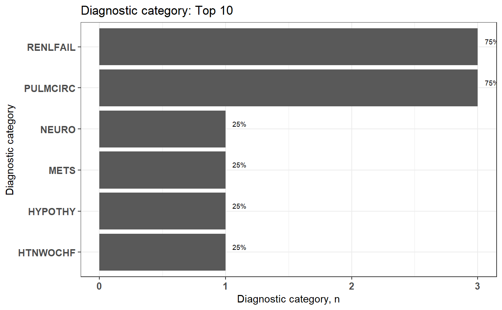
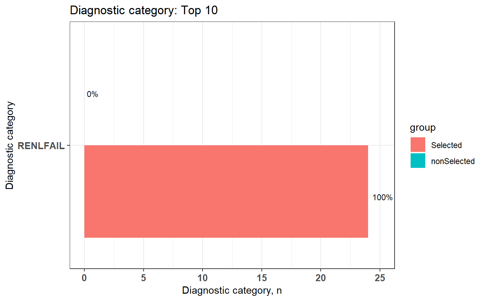

plot_groupedData.RdPlot of diagnostic category data
plot_groupedData(groupedDataWide, TopN = 10, limitPercentage = 0.01, pvalue = 0.05)
| groupedDataWide | groupedData file from functions of code classification (four stPercentagegies) |
|---|---|
| TopN | Default is Top "10" |
| limitPercentage | the minimum of Percentage Default is "0.01", in other words,the limit at same diagnostic category must have 1 percent patient in total patient. |
| pvalue | p value of chisq.test |
head(sampleDxFile)#> ID ICD Date #> 1: A2 Z992 2020-05-22 #> 2: A5 Z992 2020-01-24 #> 3: A8 Z992 2015-10-27 #> 4: A13 Z992 2020-04-26 #> 5: A13 Z992 2025-02-02 #> 6: A15 Z992 2023-05-12groupedDataWide <- groupedDataLongToWide(sampleDxFile, ID, ICD, Date, icd10usingDate = "2015-10-01", groupDataType = elix)#>#>#>#>#>#>#> Warning: The ICD mentioned above matches to "NA" due to the format or other issues.#> Warning: "Wrong ICD format" means the ICD has wrong format#> Warning: "Wrong ICD version" means the ICD classify to wrong ICD version (cause the "icd10usingDate" or other issues)plot1 <- plot_groupedData(groupedDataWide = groupedDataWide, TopN = 10, limitPercentage = 0.01) selectedCaseFile <- selectCases(DxDataFile = sampleDxFile, idColName = ID, icdColName = ICD, dateColName = Date, icd10usingDate = "2015/10/01", groupDataType = ccslvl2, caseCondition = "Diseases of the urinary system", caseCount = 1)#>#>#>#>#>#>#> Warning: The ICD mentioned above matches to "NA" due to the format or other issues.#> Warning: "Wrong ICD format" means the ICD has wrong format#> Warning: "Wrong ICD version" means the ICD classify to wrong ICD version (cause the "icd10usingDate" or other issues)groupedDataWide <- groupedDataLongToWide(sampleDxFile, ID, ICD, Date, icd10usingDate = "2015-10-01", groupDataType = elix, selectedCaseFile = selectedCaseFile)#>#>#>#>#>#>#> Warning: The ICD mentioned above matches to "NA" due to the format or other issues.#> Warning: "Wrong ICD format" means the ICD has wrong format#> Warning: "Wrong ICD version" means the ICD classify to wrong ICD version (cause the "icd10usingDate" or other issues)plot2 <- plot_groupedData(groupedDataWide = groupedDataWide, TopN = 10, limitPercentage = 0.01, pvalue = 0.05) plot1#> $graph#> #> $sigCate #> category count catePerc #> 1: RENLFAIL 24 63.16% #> 2: ANEMDEF 5 13.16% #> 3: PULMCIRC 5 13.16% #> 4: LIVER 4 10.53% #> 5: PSYCH 3 7.89% #> 6: DRUG 2 5.26% #> 7: METS 2 5.26% #> 8: NEURO 2 5.26% #> 9: PARA 2 5.26% #> 10: TUMOR 2 5.26% #>plot2#> $graph#> #> $sigCate #> category group count catePerc #> 1: RENLFAIL Selected 19 79.17% #> 2: RENLFAIL nonSelected 5 35.71% #>